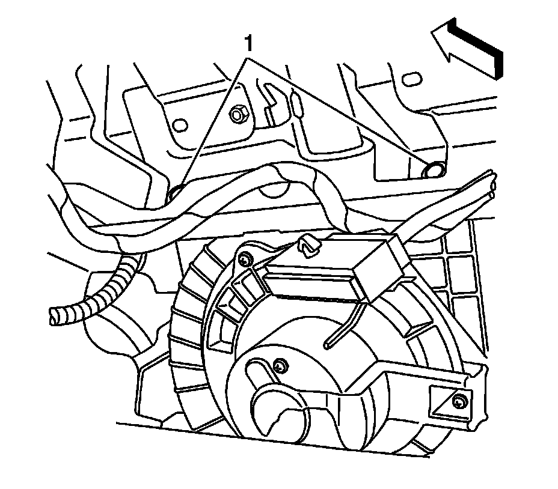
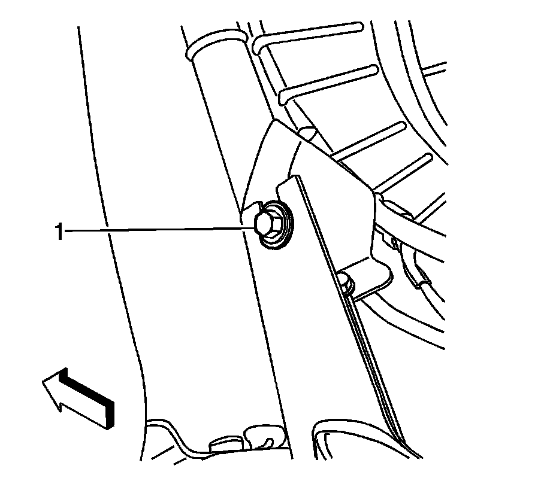
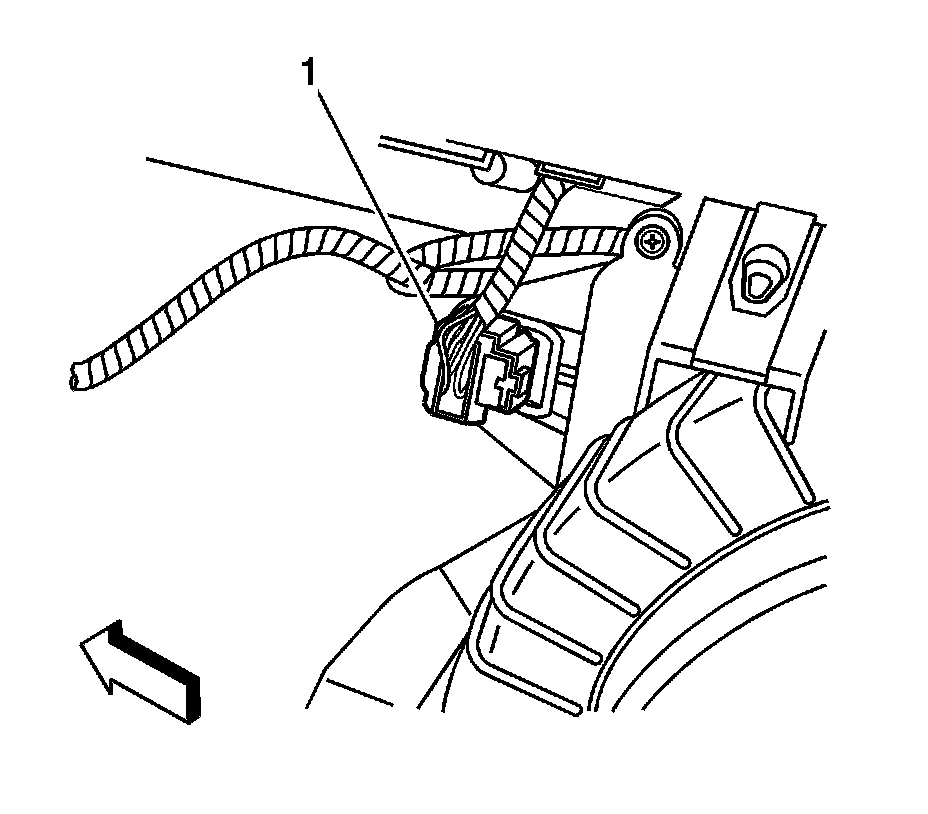
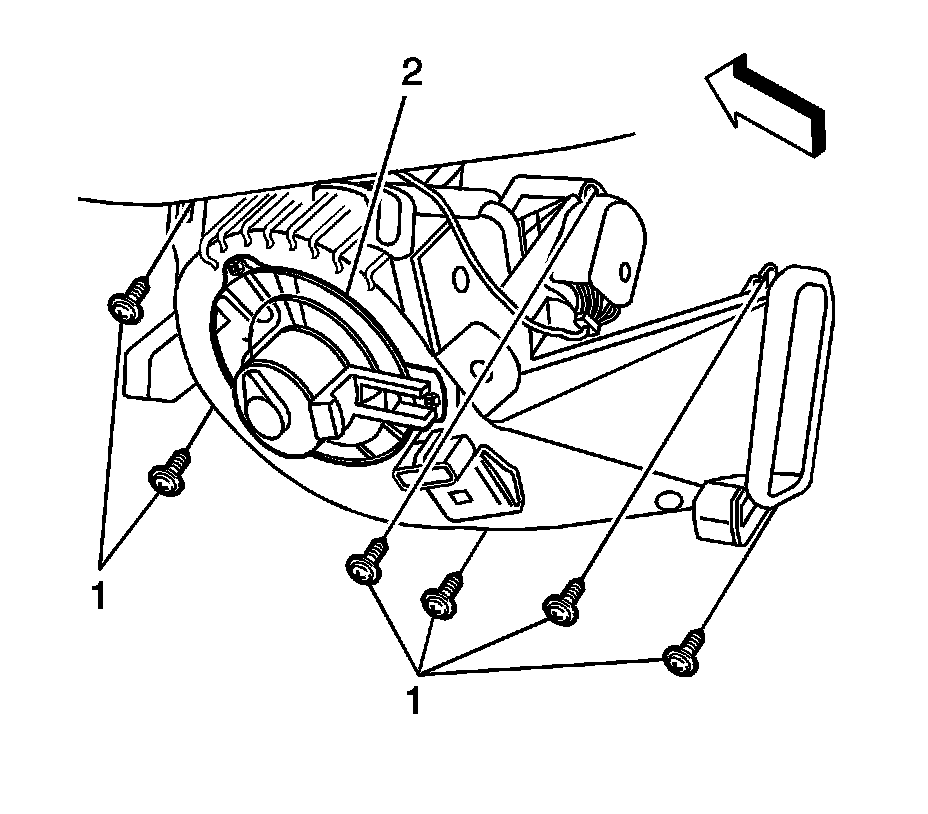
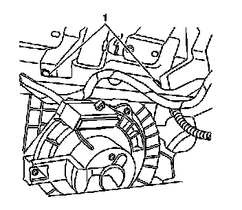
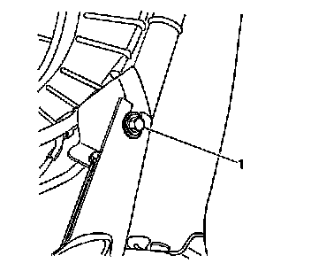

Air Inlet Assembly Replacement (Right Hand Drive)
Air Inlet Assembly Replacement (Right Hand Drive)
Removal Procedure
1. Remove the instrument panel (I/P) compartment. Refer to Instrument Panel Compartment Replacement (Left Hand Drive) (Service and Repair)Instrument Panel Compartment Replacement (Right Hand Drive) (Service and Repair) .
2. Remove the left insulator panel. Refer to Instrument Panel Insulator Panel Replacement - Left Side (Left Hand Drive) (Service and Repair)Instrument Panel Insulator Panel Replacement - Left Side (Right Hand Drive) (Service and Repair) .

3. Remove the upper air inlet assembly bolts (1) from the I/P carrier.

4. Remove the lower left air inlet assembly bolt from I/P carrier (1).
5. Slide the assembly to the left and then lower.

6. Disconnect the air inlet assembly electrical connector (1).

7. Rotate the air inlet assembly (1) and remove.
Installation Procedure
1. Install the air inlet assembly (1) to the locator pin.
2. Connect the air inlet assembly electrical connector (1).

Notice: Refer to Fastener Notice (Fastener Notice) .
3. Install the upper air inlet assembly bolts to I/P carrier (1).
Tighten the bolt to 9 N.m (80 lb in).

4. Install the lower right air inlet assembly bolt to I/P carrier (1).
Tighten the bolt to 9 N.m (80 lb in).
5. Install the I/P compartment. Refer to Instrument Panel Compartment Replacement (Left Hand Drive) (Service and Repair)Instrument Panel Compartment Replacement (Right Hand Drive) (Service and Repair) .
6. Install the left insulator panel. Refer to Instrument Panel Insulator Panel Replacement - Left Side (Left Hand Drive) (Service and Repair)Instrument Panel Insulator Panel Replacement - Left Side (Right Hand Drive) (Service and Repair) .